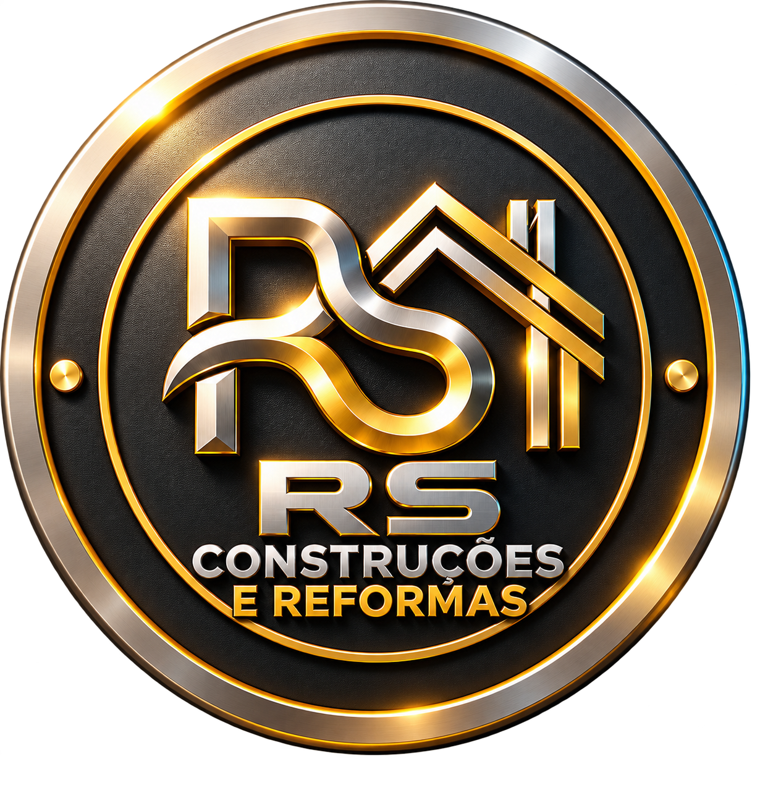

⌂
Obras residenciais
Construções e reformas para transformar a forma como você vive. Atenção à rotina dos moradores, à proteção dos ambientes e aos detalhes do acabamento.
Conversar sobre meu imóvel
RS CONSTRUÇÕESUma obra bem executada começa com confiança.
Com Ranieri
Soares, você tem acompanhamento próximo, organização e cuidado do
primeiro passo ao acabamento.
Construir ou reformar é investir no que importa para você. Por isso, a RS CONSTRUÇÕES E REFORMAS coloca a responsabilidade, a comunicação e o cuidado com o seu imóvel no centro de cada etapa.
À frente da execução, Ranieri Soares é o seu contato para alinhar prioridades, esclarecer dúvidas e conduzir o trabalho com foco em qualidade, prazo e preço justo, de acordo com o escopo da sua obra.
Cada espaço tem uma finalidade.
Cada obra merece um plano
próprio.
Construções e reformas para transformar a forma como você vive. Atenção à rotina dos moradores, à proteção dos ambientes e aos detalhes do acabamento.
Conversar sobre meu imóvelEspaços preparados para receber melhor e trabalhar com mais eficiência. Etapas alinhadas à operação do seu negócio para reduzir interferências na rotina.
Planejar meu espaço comercialExecução orientada às necessidades do seu espaço produtivo, com organização do canteiro, atenção à segurança e planejamento das frentes de trabalho.
Avaliar minha demanda industrialConstrução e reforma para demandas do setor público, com escopo, documentação e condições de execução avaliados conforme os requisitos de cada contratação.
Apresentar uma demandaNão é apenas sobre entregar uma obra.
É sobre respeitar tudo o
que existe ao redor dela.
Planejamento e atenção às condições de trabalho para uma execução responsável em cada etapa.
Cuidado com moradores, vizinhos e áreas de circulação, com alinhamento das atividades que impactam o dia a dia.
Materiais organizados e atenção à limpeza do canteiro. Um ambiente de trabalho cuidado faz parte da entrega.
Escopo, etapas e prazos alinhados antes da execução. Mudanças e imprevistos tratados com transparência.
Você entende o caminho.
A gente alinha cada etapa com você.
Envie a localização, o tipo de imóvel e o que deseja construir ou transformar.
Avalie com Ranieri as necessidades, as condições do local e a possibilidade de uma visita.
Tenha clareza sobre serviços, materiais, etapas, prazo estimado e condições de contratação.
Com as condições aprovadas, acompanhe o andamento e os alinhamentos ao longo da obra.
Eu queria reformar, mas só de pensar na bagunça dentro de casa já ficava preocupada. Poder conversar sobre cada etapa e combinar os cuidados com os ambientes fez diferença. A gente se sente mais tranquila quando sabe o que vai acontecer.
Quem tem um negócio sabe: não dá para simplesmente parar tudo para fazer uma obra. O que eu mais valorizei foi poder explicar nossa rotina e conversar sobre as prioridades. Ter esse cuidado desde o começo trouxe mais confiança para seguir.
Minha maior preocupação era começar a obra e depois ficar sem resposta. Ter alguém com quem conversar, tirar as dúvidas e alinhar os próximos passos fez toda a diferença. Para mim, confiança começa nesse cuidado com a gente.
Uma decisão segura começa
com as perguntas certas.
Fale com Ranieri pelo WhatsApp e envie o endereço da obra, uma descrição do que precisa e, se possível, fotos ou projetos. Ele poderá orientar a avaliação do escopo e a necessidade de visita. Valores e eventuais custos de visita devem ser confirmados no atendimento.
O prazo é estimado a partir do escopo, das condições do imóvel e da disponibilidade de materiais. Antes de contratar, alinhe as etapas e o acompanhamento. Alterações de projeto ou imprevistos precisam ser comunicados e ter seus impactos combinados com você.
Depende do tipo de intervenção e das condições de segurança. A avaliação deve considerar proteção dos ambientes, circulação, horários e interferências na rotina. Converse sobre a ocupação do imóvel antes de definir a execução.
A organização do canteiro e o respeito aos moradores são pilares da empresa. Na proposta, alinhe a proteção das áreas, a rotina de limpeza e a responsabilidade pela retirada e destinação dos resíduos.
A responsabilidade pela compra e pelo fornecimento de materiais deve ser combinada conforme o serviço. Especificações, quantidades e aprovações precisam estar claras na proposta para evitar desencontros e compras desnecessárias.
Peça que as condições aplicáveis ao serviço, aos materiais e à manutenção sejam esclarecidas e registradas na contratação. Prazos e abrangência dependem do que será executado. Ranieri pode orientar os detalhes da sua proposta.
A RS CONSTRUÇÕES E REFORMAS tem base em Realengo e atua no Rio de Janeiro. Envie o endereço do imóvel pelo WhatsApp para confirmar a disponibilidade e as condições de atendimento na sua região.
Conte o que você quer construir. Vamos conversar sobre
o
melhor caminho para tirar sua obra do papel.
R. Jacupiranga, 104 — Realengo
Rio de Janeiro — RJ ·
21730-280